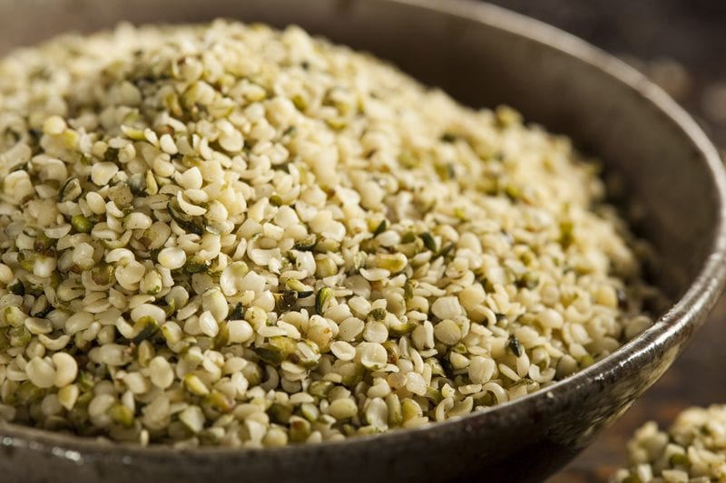

Hemp Seeds
If you’re looking to improve digestion, balance hormones or improve metabolism (perhaps all three!), hemp seeds may just be the superfood you’re looking for.
Really? A Superfood?
I think it is safe to call them a superfood. For starters the offer up an excellent 3:1 balance of omega-3 and omega-6 fatty acids, which promote cardiovascular health. Most diets are too high in omega 6, which can lead to inflammation and dis-ease. Ultimately, we should aim for a 1:1 ratio when it comes to omega 3 and 6.

Protein Perfect
For vegans and anyone else who avoid animal products, hemp is a great alternative because it contains very high-quality protein. In fact, it is a complete protein. Due to its protein source, they are more digestible than seeds or nuts, and won’t leave you feeling bloated. Hopefully. Of course, we all react differently to foods, so test to see how your body responds to them.
- Hemp seed is 33% protein
- Hemp seed is 35% essential fatty acid
(Omega 3, 6, 9 and GLA)
- Contains all 9 essential amino acids
- Contains 6.2 x more Omega-3 than raw tuna
- Contains an abundant source of GLA
- Rich in trace minerals
- High in dietary fiber
Hemp seeds can be used in countless ways. Throw a tablespoon or two into a smoothie, blend them into a salad dressing, sprinkle on top of your salad, use hemp seeds in place of pine nuts in pesto, blend with water to make hemp milk… my goodness, it is endless!
Disclaimer
This website is not intended to provide medical advice. All content, including text, graphics, images, and information available on this site is for general informational, entertainment and educational purposes only. The content is not intended to be a substitute for professional diagnosis or treatment. The author of this site is not responsible for any adverse effects that may occur from the application of the information on this site. You are encouraged to make your own healthcare decisions, based on your research and in partnership with a qualified healthcare professional.
© AmieSue.com